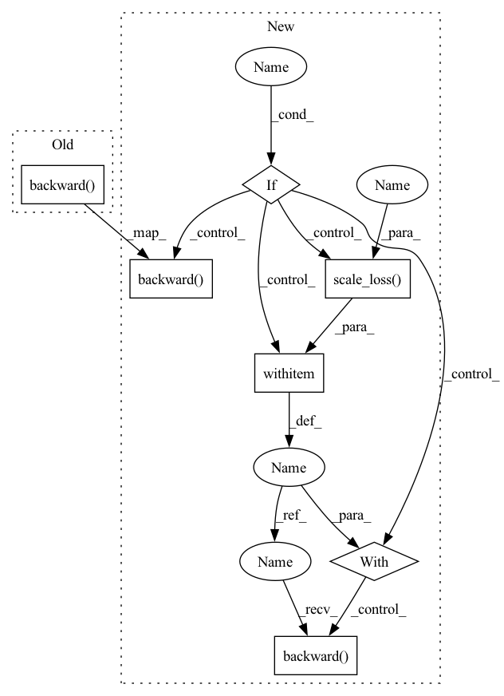

Pattern ID :24883
Before Change
losses_m.update(loss.item(), input.size(0))
optimizer.zero_grad()
loss.backward()
optimizer.step()
torch.cuda.synchronize()
num_updates += 1After Change
losses_m.update(loss.item(), input.size(0))
optimizer.zero_grad()
if use_amp :
with amp.scale_loss(loss , optimizer) as scaled_loss:
scaled_loss .backward()
else:
loss.backward()
optimizer.step()
torch.cuda.synchronize()
num_updates += 1In pattern: SUPERPATTERN
Frequency: 5
Non-data size: 7
Instances Fragment ID: 76727938
Project Name: alvinwan/nbdt-pytorch-image-models
Commit Name: 5180f94c7e4fa001231a5794e2cfe0107ef98109
Time: 2019-04-05
Author: rwightman@gmail.com
File Name: train.py
M Class Name: AnonimousClass
N Class Name: AnonimousClass
M Method Name: train_epoch(10)
N Method Name: train_epoch(9)
M Parent Class:
N Parent Class:
M File Name: train.py
N File Name: train.py
M Start Line: 228
M End Line: 265
N Start Line: 283
N End Line: 349
Before Change
if torch.isnan(loss):
raise ValueError("nan loss encountered")
loss.backward()
train_loss += loss.item()
batch_grad_norm = self.rescale_gradients()
if self.tensorboard.should_log_histograms_this_batch():After Change
self.batch_num_total += 1
self.optimizer.zero_grad()
loss = self.batch_loss(self.model, batch_group)
if torch.isnan(loss):
raise ValueError("nan loss encountered")
if self.use_fp16 :
from apex import amp
with amp.scale_loss( loss, self.optimizer) as scale_loss:
scale_loss.backward()
else:
loss.backward()
train_loss += loss.item()
batch_grad_norm = self.rescale_gradients()
if self.tensorboard.should_log_histograms_this_batch(): Fragment ID: 76727937
Project Name: waterzxj/unf
Commit Name: 203df20453d02104fc8d91d0dc6634a563f5f82f
Time: 2020-02-23
Author: zhouxiaojiang@n22-148-069.byted.org
File Name: UNF/training/learner.py
M Class Name: Trainer
N Class Name: Trainer
M Method Name: train_epoch(2)
N Method Name: train_epoch(2)
M Parent Class: object
N Parent Class: object
M File Name: UNF/training/learner.py
N File Name: UNF/training/learner.py
M Start Line: 291
M End Line: 303
N Start Line: 313
N End Line: 335
Before Change
outputs = torch.cat((outputs, output))
targets = torch.cat((targets, target))
loss = self.criterion(output, target)
loss.backward()
self.optimizers["model"].step()
self.train_step += 1
self.writer.set_step(self.train_step)After Change
if len(self.metrics_epoch) > 0:
outputs = torch.cat((outputs, output))
targets = torch.cat((targets, target))
loss = self.criterion(output, target)
if self.apex :
with self.amp.scale_loss( loss, self.optimizers["model"]) as loss_scaled:
loss_scaled.backward()
else:
loss.backward()
self.optimizers["model"].step()
self.train_step += 1
self.writer.set_step(self.train_step) Fragment ID: 76727942
Project Name: deeperlearner/pytorch-template
Commit Name: aa69f0406334df0b4aed5dbfcf58990eeaa1def0
Time: 2021-05-04
Author: b04202035@g.ntu.edu.tw
File Name: trainers/trainer.py
M Class Name: Trainer
N Class Name: Trainer
M Method Name: _train_epoch(2)
N Method Name: _train_epoch(2)
M Parent Class: BaseTrainer
N Parent Class: BaseTrainer
M File Name: trainers/trainer.py
N File Name: trainers/trainer.py
M Start Line: 76
M End Line: 76
N Start Line: 75
N End Line: 81
Before Change
losses_m.update(loss.item(), input.size(0))
optimizer.zero_grad()
loss.backward()
optimizer.step()
torch.cuda.synchronize()
num_updates += 1After Change
output = model(input)
loss = loss_fn(output, target)
if not args.distributed:
losses_m.update(loss.item(), input.size(0))
optimizer.zero_grad()
if use_amp :
with amp.scale_loss( loss, optimizer) as scaled_loss:
scaled_loss.backward()
else:
loss.backward()
optimizer.step()
torch.cuda.synchronize()
num_updates += 1 Fragment ID: 76727941
Project Name: feng-lab/pytorch-image-models
Commit Name: 5180f94c7e4fa001231a5794e2cfe0107ef98109
Time: 2019-04-05
Author: rwightman@gmail.com
File Name: train.py
M Class Name: AnonimousClass
N Class Name: AnonimousClass
M Method Name: train_epoch(10)
N Method Name: train_epoch(9)
M Parent Class:
N Parent Class:
M File Name: train.py
N File Name: train.py
M Start Line: 228
M End Line: 265
N Start Line: 283
N End Line: 349
Before Change
batch_taskname = (batch, taskname)
total_loss = self.train_on_batch(batch_taskname, args)
total_loss /= self.t_config.gradient_accumulation_steps
total_loss.backward()
scalar_total_loss = total_loss.cpu().item() * self.t_config.gradient_accumulation_steps
self.tb_writer.add_scalar("scalar/total_loss", scalar_total_loss, writer_step)
writer_step += 1After Change
if batch_postprocessors is not None:
batch = batch_postprocessors[taskname](batch)
batch_taskname = (batch, taskname)
total_loss = self.train_on_batch(batch_taskname, args)
total_loss /= self.t_config.gradient_accumulation_steps
if self.t_config.fp16 :
with amp.scale_loss( total_loss,optimizer) as scaled_loss:
scaled_loss.backward()
else:
total_loss.backward()
scalar_total_loss = total_loss.cpu().item() * self.t_config.gradient_accumulation_steps
self.tb_writer.add_scalar("scalar/total_loss", scalar_total_loss, writer_step)
writer_step += 1
if max_grad_norm > 0: Fragment ID: 76727932
Project Name: airaria/textbrewer
Commit Name: 89a5c7f43ae32c7e4f547980acda0d1b8ae91712
Time: 2020-07-07
Author: yangziqing@163.com
File Name: src/textbrewer/distiller_multitask.py
M Class Name: MultiTaskDistiller
N Class Name: MultiTaskDistiller
M Method Name: train(11)
N Method Name: train(11)
M Parent Class: BasicDistiller
N Parent Class: BasicDistiller
M File Name: src/textbrewer/distiller_multitask.py
N File Name: src/textbrewer/distiller_multitask.py
M Start Line: 96
M End Line: 102
N Start Line: 59
N End Line: 118